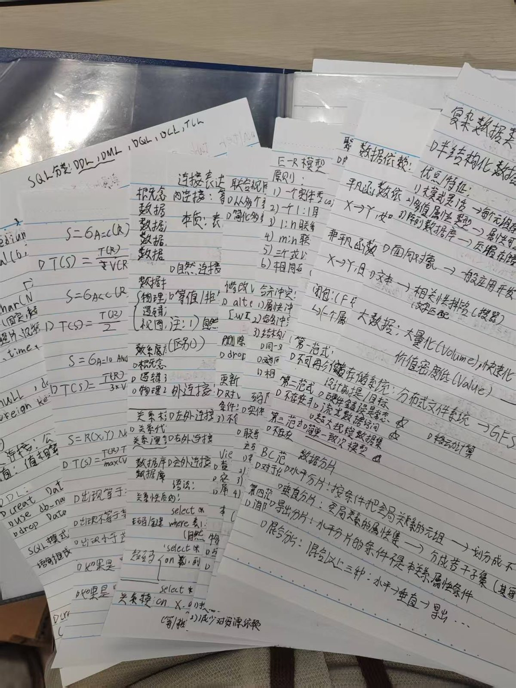
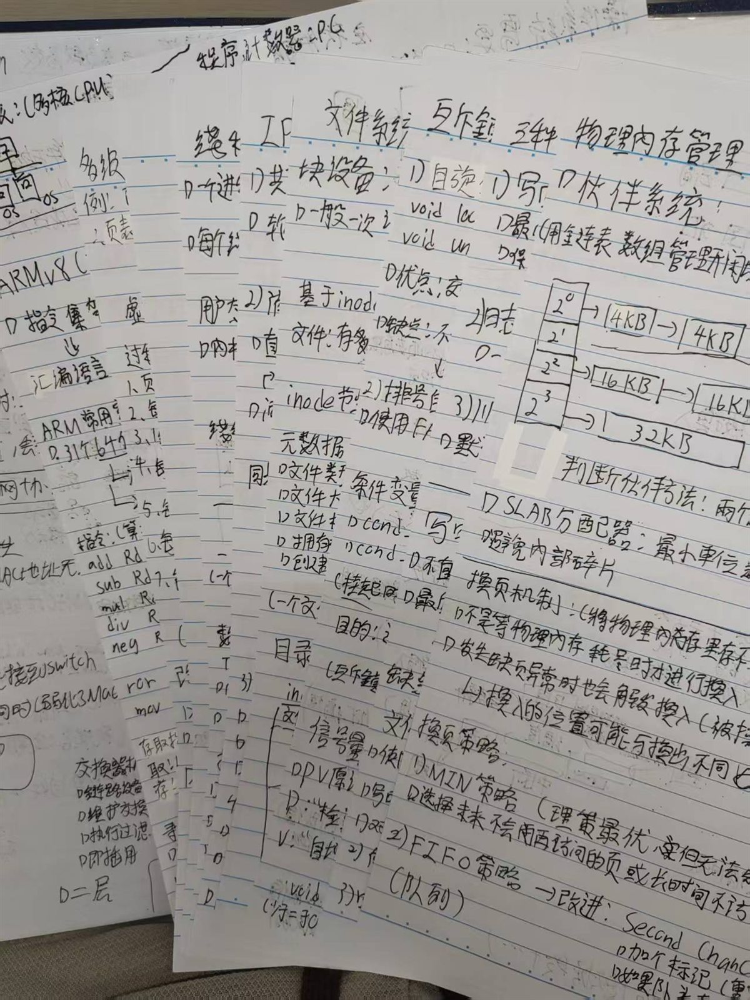
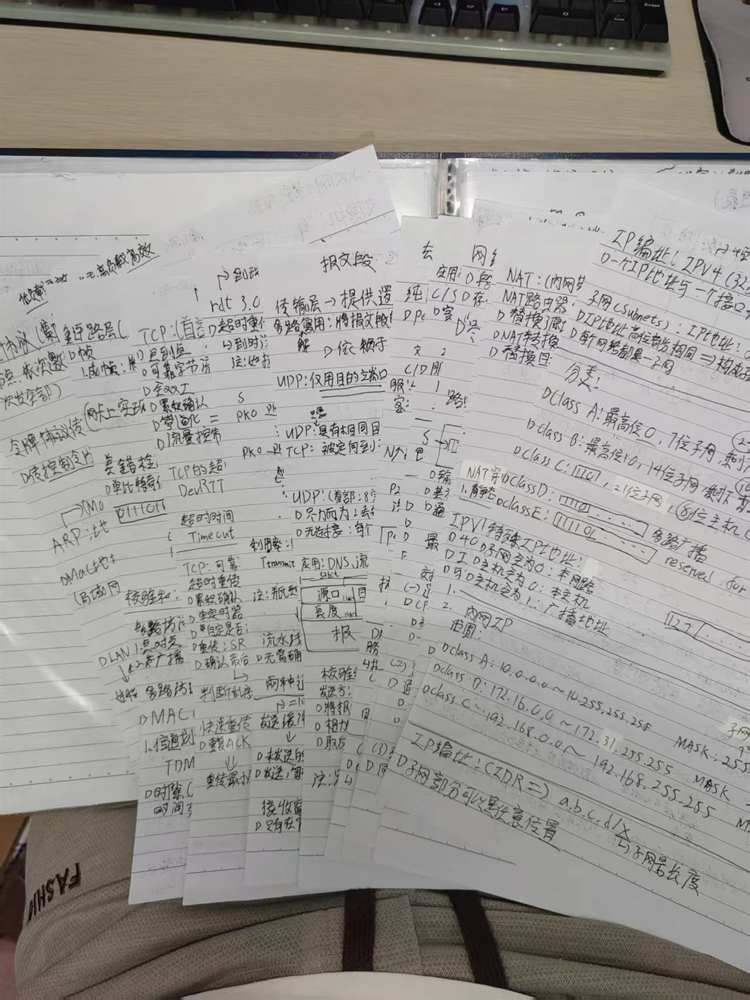
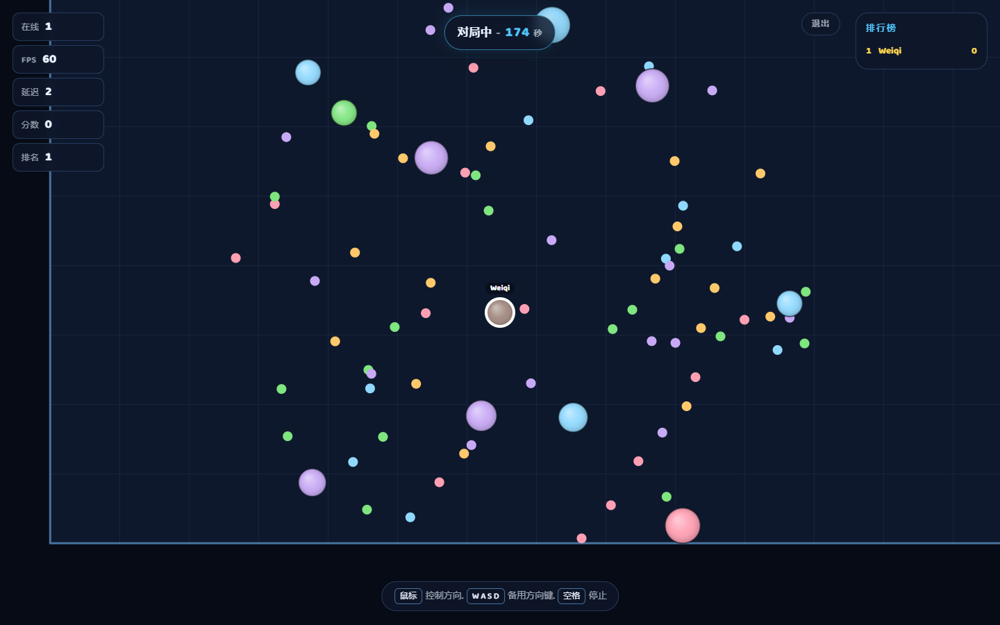
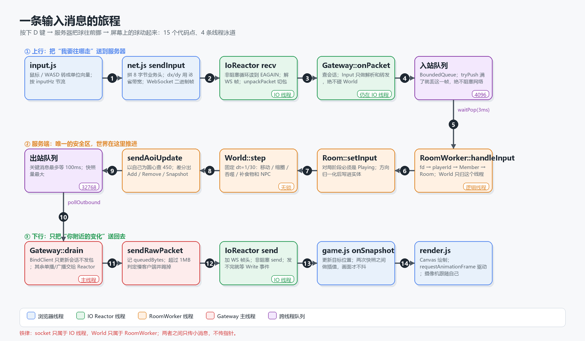
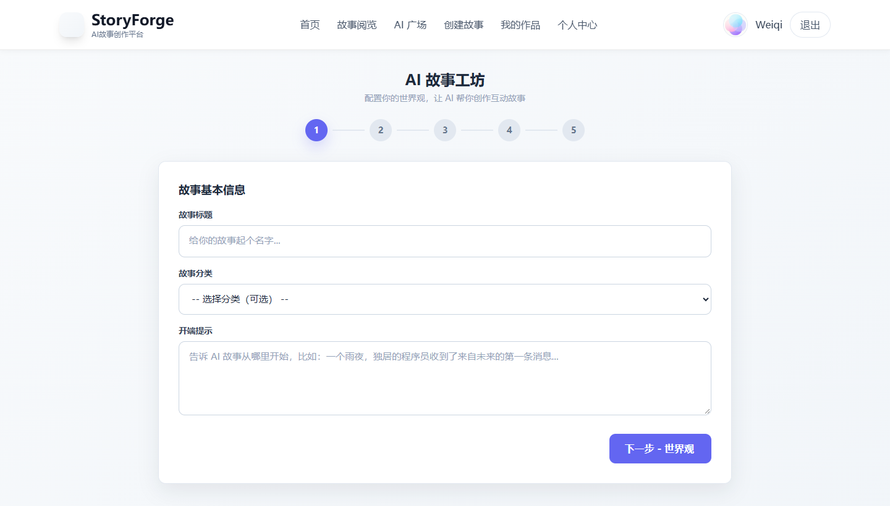

01
併發的邊界
操作系統 / 線程與共享資源
不是把鎖加得越多越安全，而是先劃清誰擁有狀態。
→ 後來落在 Blob Arena 的線程封閉與有界佇列。
PERSONAL WORKING NOTES
我做後端，習慣把「能運行」
繼續推進到「可驗證、可維護、能交接」。
結果寫在履歷上，
學習與工作的過程留在這裡。
01 / 學習
BEFORE THE CODE



01
操作系統 / 線程與共享資源
不是把鎖加得越多越安全，而是先劃清誰擁有狀態。
→ 後來落在 Blob Arena 的線程封閉與有界佇列。
02
計算機網絡 / TCP 與 WebSocket
TCP 是字節流，消息邊界不能靠猜，必須由協議明確定義。
→ 後來落在自定義二進制包頭與粘包、半包處理。
03
資料庫原理 / 事務與一致性
能回退的變更，才值得放心上線。
→ 後來落在 StoryForge 的資料庫遷移與失敗處理。
02 / 系統
TRACES IN THE BUILD
SYSTEM 01 / 2026
一個可在瀏覽器直接進入的 4 人即時競技服務端。 我使用 AI 編程工具協作完成，並持續整理需求、驗證行為與收斂架構。
AI 負責快速生成初稿；
但什麼值得信任，仍要由測試、運行結果與邊界來回答。


查看完整概念圖 ↗RUNTIME / 版本對照
2026.09 / INITIAL PUBLIC RELEASE
初次公開版本先完成可運行的多人即時對局， 讓網路、房間與遊戲規則形成一條完整鏈路。
2026.11 / REFINED RUNTIME
後續整理把網路、遊戲邏輯與跨線程通信拆開。 I/O 與房間邏輯不再直接共享狀態，失敗和背壓也有了明確位置。
Git 留下了兩個清楚節點：2026.09 Initial public release 到 2026.11 refine game runtime and development workflow。
SYSTEM 02 / 2026
四人團隊協作的故事創作平台，我負責後端 AI 故事相關的一部分。 這裡留下的痕跡，不是「接入了模型」，而是如何約束一個不穩定的生成過程。
模型負責生成，系統負責驗證。
不合格時重試，沒有依據時明確失敗。

SYSTEM SKETCH / AI STORY PIPELINE
非法輸出 → 最多重試兩次 → 明確失敗，不用假內容補位
根據 backend/routes/aiStory.js 的真實流程整理
規則書
故事會話
DeepSeek 生成
JSON 解析
驗證 / 重試
產出順序
先把分支選項完整輸出，再寫長篇正文，避免截斷後故事卡死。
失敗邊界
重試兩次仍不合格就明確報錯，不用假選項製造「看起來成功」。
持續修正
從路由結構、JSON 解析到限制查詢，都留下了逐項修正的提交記錄。
03 / 去向
WHY BOC MACAU
澳門中銀的資訊科技崗不只是開發，還包括需求、測試、投產、維護與故障跟進。 這和我做項目時關注可驗證、可維護的習慣一致。
我願意從基礎工作做起，在澳門長期發展。
不是把銀行當作技術的終點，而是把技術放進更長期的責任裡。